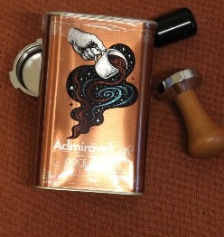
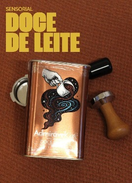
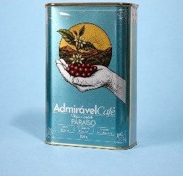

Desde 1912
Família Ricci
Sítio Santa Luzia · Serra da Mantiqueira
Mais de um século cultivando café. Do sítio deles vem o nosso Doce de Leite: doçura de doce de leite, corpo macio e acidez baixa.
Quem somos
A Admirável Café é uma marca de cafés especiais de Limeira/SP. A gente escolhe pequenos lotes direto com quem planta, conta no rótulo de onde cada café vem e leva o mesmo café da lata para o balcão das festas.

Cada café tem nome de família, sítio e região. Você sabe quem plantou o que está na sua xícara.
Microlotes, torrados em pequenas levas, no ponto que valoriza o que cada um tem de melhor.
Variedade, processo, origem e sensorial. Sem termo vago: o que está escrito é o que você vai sentir.
Quem planta

Desde 1912
Sítio Santa Luzia · Serra da Mantiqueira
Mais de um século cultivando café. Do sítio deles vem o nosso Doce de Leite: doçura de doce de leite, corpo macio e acidez baixa.

3º lugar · Região do Pinhal 2026
Sítio São Carlos · Serra da Mantiqueira
Sítio Imbiruçu · Região do Pinhal
De dois sítios da família vêm o Paraíso e o Floral e Mel, que ficou em 3º lugar no Concurso de Qualidade dos Cafés de Origem 2026 da Região do Pinhal.
Do grão à sua xícara

Latas que são arte
Algumas latas são ilustradas por artistas convidados. A nº 2 é da Débora Leone, artista de Limeira que vive em Barcelona, e guarda o nosso Paraíso. Tiragem pequena: quando acaba, acabou.
Ver edições e combosPor trás da Admirável
Tudo começou há muitos anos, quando a gente descobriu como os grãos do Brasil podem ser diferentes entre si: de uma região para outra, de um sítio para o vizinho, de uma safra para a próxima.
A Admirável nasceu para dividir essa descoberta. Selecionamos cafés de pequenas propriedades, escolhemos cada lote pelo que ele tem de único e contamos a história que vem junto com ele: a família, o lugar, o jeito de cuidar do café.
Comprar direto de quem planta é também a nossa forma de apoiar pequenos produtores e de ajudar o café brasileiro a seguir de pé por muitas gerações. Do produtor para a sua casa, sem pressa e sem atalho.